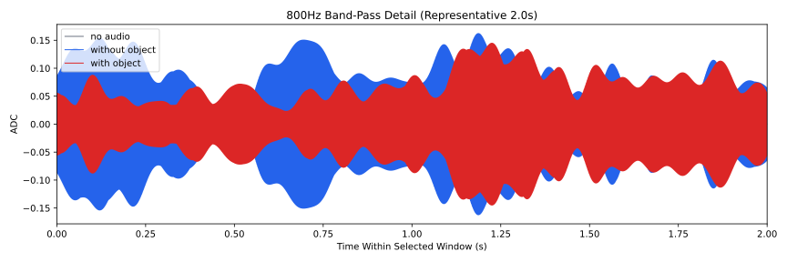
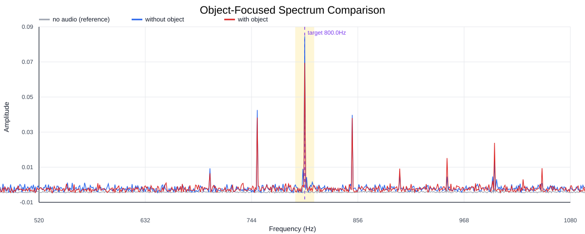
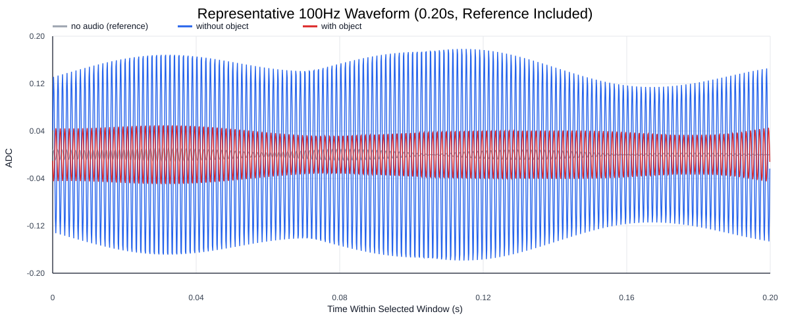
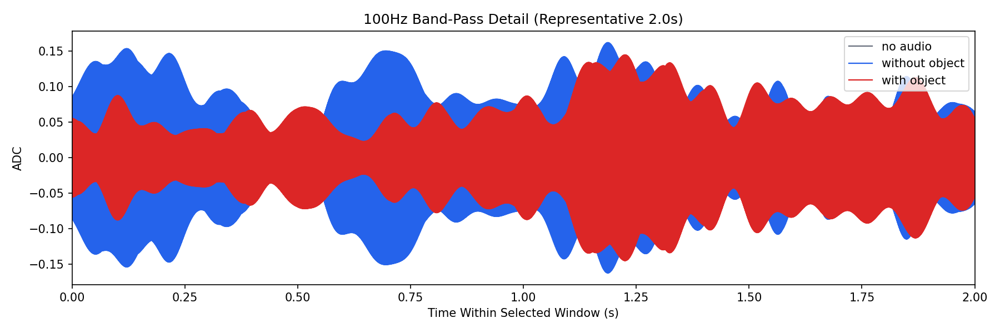
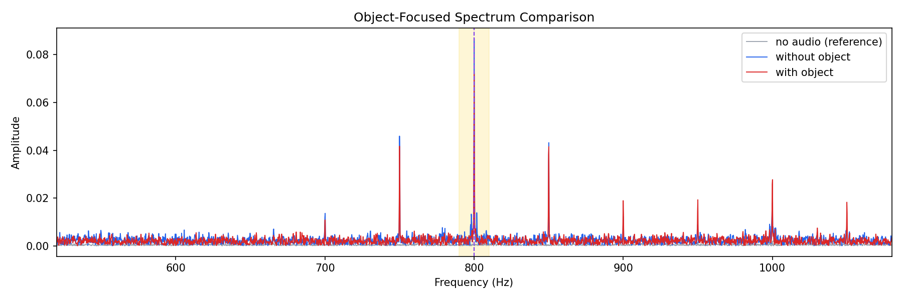
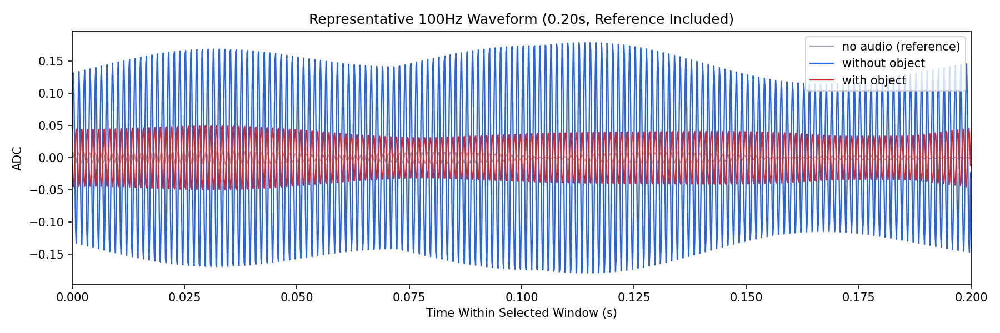

Background: F:\项目类文件夹\异物检测4.10\Data_Dual\frequency_sweep\0800Hz\repeat_01\raw\no_audio.csv
Without object: F:\项目类文件夹\异物检测4.10\Data_Dual\frequency_sweep\0800Hz\repeat_01\raw\without_object.csv
With object: F:\项目类文件夹\异物检测4.10\Data_Dual\frequency_sweep\0800Hz\repeat_01\raw\with_object.csv
| Metric | 无音频 | 100Hz无异物 | 100Hz有异物 | 无异物/无音频 | 有异物/无异物 | 有异物/无音频 |
|---|---|---|---|---|---|---|
| centered_rms | 0.042891 | 0.248467 | 0.216292 | 5.7930 | 0.8705 | 5.0429 |
| raw_target_amp | 0.000419 | 0.086824 | 0.072058 | 207.3730 | 0.8299 | 172.1056 |
| filtered_rms | 0.003479 | 0.072280 | 0.052578 | 20.7759 | 0.7274 | 15.1130 |
| filtered_target_amp | 0.000419 | 0.086824 | 0.072058 | 207.3730 | 0.8299 | 172.1056 |
| filtered_energy_ratio | 0.006579 | 0.084625 | 0.059092 | 12.8621 | 0.6983 | 8.9814 |
| window_filtered_target_amp_mean | 0.003194 | 0.092737 | 0.069103 | 29.0377 | 0.7452 | 21.6376 |
| window_filtered_target_amp_std | 0.003435 | 0.042209 | 0.026181 | 12.2872 | 0.6203 | 7.6214 |





